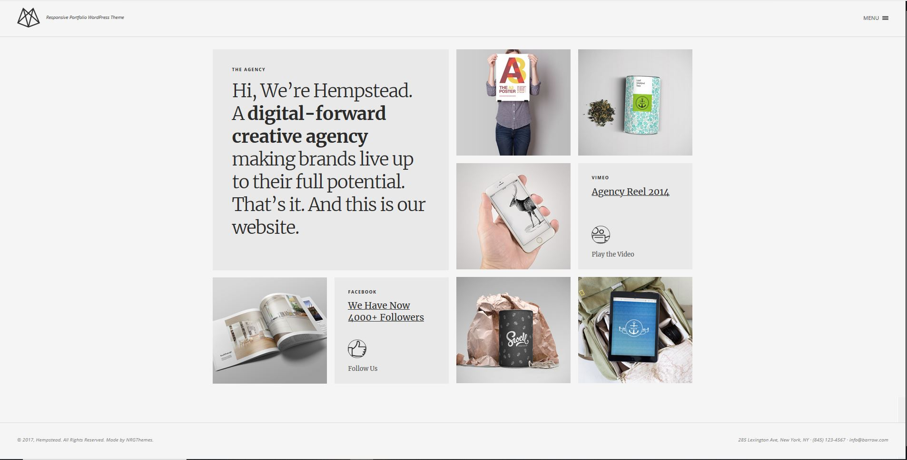
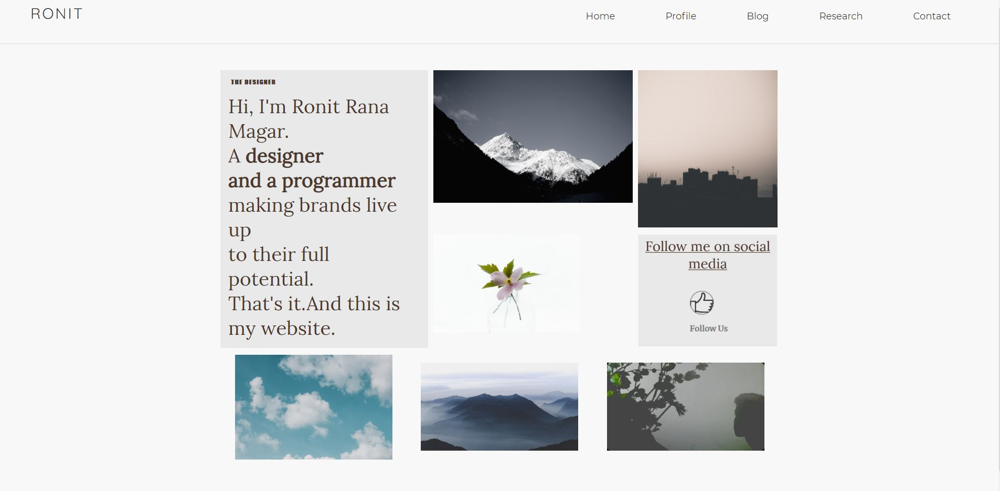
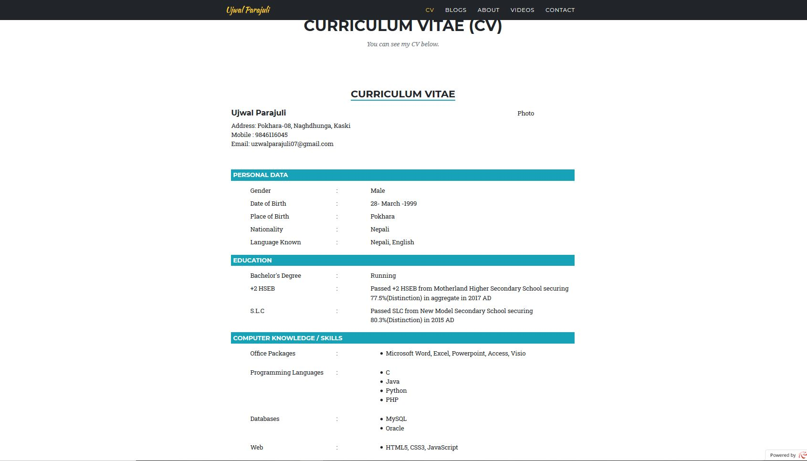
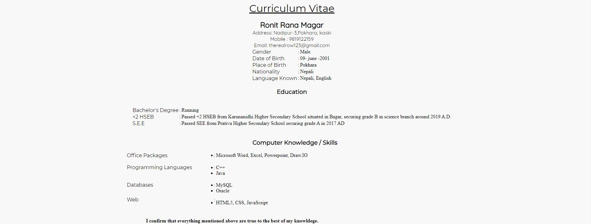
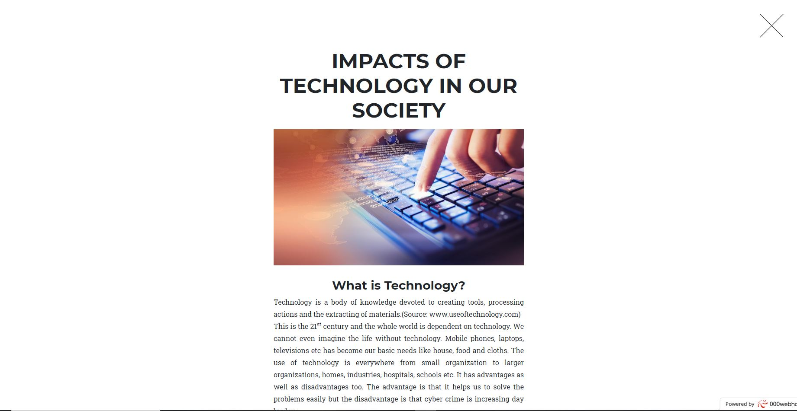
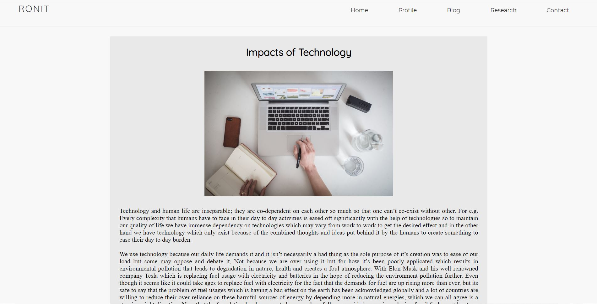
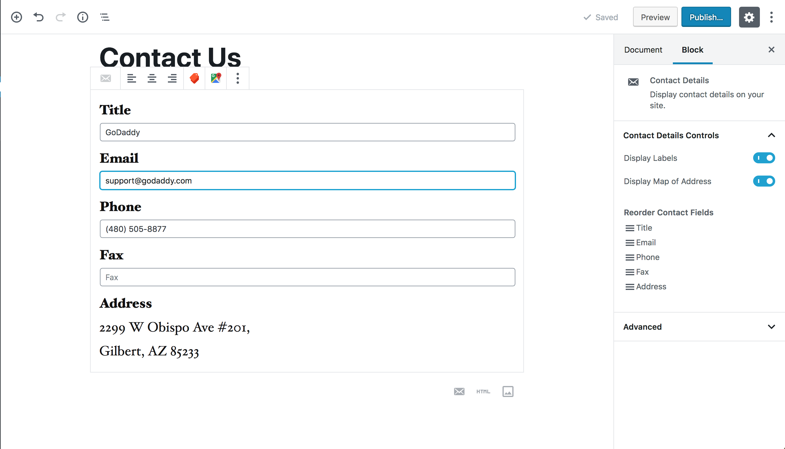
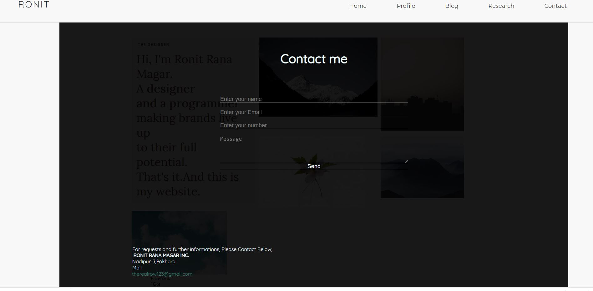
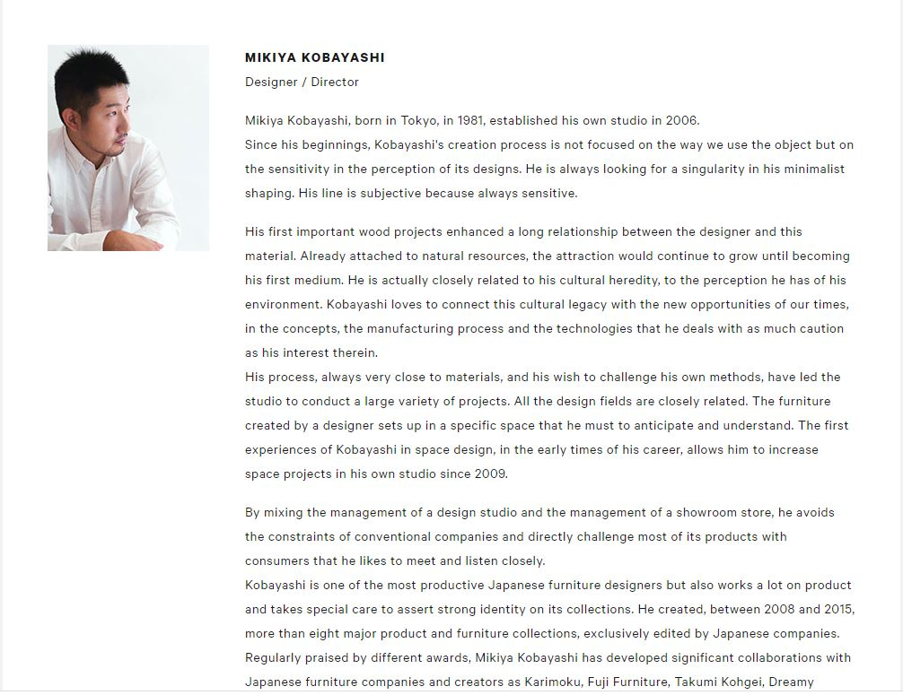
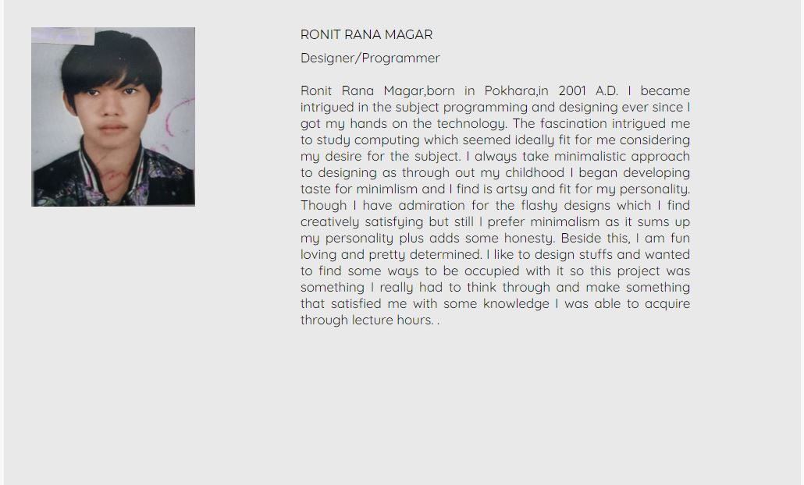

| Reference Page | My page | Contradictions |
|---|---|---|
|  |  | I have copied the layout of this website for the home page as it seemed fit for my taste. I loved the dynamic between the text and images which really complimented each other |
|  |  | I was inspired by the layout out of the Cv from fellow nepalese. I modified the layout alittle to add my touch. |
|  |  | I was inspired by the layout of this blog which looked clean and tried to do something more with this concept which was pleasing for the eye and minimalistic |
|  |  | I was inspired by this layout of contact page which was simple but i tried to add my own concept around it . |
|  |  | I was inspired by this About for my web page profile. |